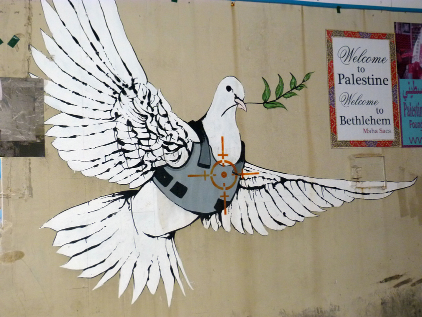

Bienvenue sur le site de l'OCCIP !
Comment la possession d'un territoire peut causer une rivalites entre deux pouvoirs?

Qui nous sommes
Nous sommes une organisation dévouée à la promotion de la paix et à la
résolution des conflits entre Israël et la Palestine. Notre mission
est de travailler de manière constructive et collaborative pour créer
un avenir où les peuples israélien et palestinien vivent ensemble dans
la paix, la sécurité et la prospérité.
Contenu du Site
Sur ce site, vous trouverez des informations sur les causes profondes
des conflits israélo-palestiniens, les conséquences dévastatrices de
ces conflits sur les populations concernées, ainsi que des solutions
envisageables pour parvenir à une paix durable dans la région.
Contactez nous
N'hésitez pas à nous contacter si vous souhaitez en savoir plus sur
notre travail ou si vous souhaitez vous impliquer dans nos efforts
pour la paix en Israël et en Palestine.
Rejoignez nous
Nous croyons fermement en l'importance du dialogue, de la
compréhension mutuelle et de la coopération pour surmonter les
divisions et construire un avenir meilleur pour tous. Rejoignez-nous
dans notre engagement pour la paix et la justice !
Le pouvouir du collectif
Explorez notre site pour en apprendre davantage
sur notre organisation, nos projets et nos initiatives. Ensemble, nous pouvons
faire une différence et contribuer à bâtir un monde plus harmonieux et
inclusif.
Merci de votre visite et de votre intérêt pour l'OCCIP !